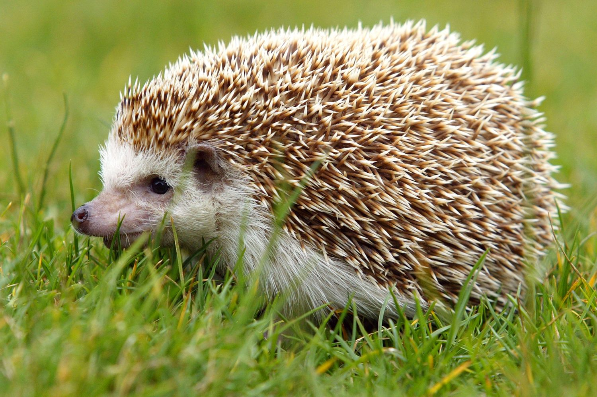
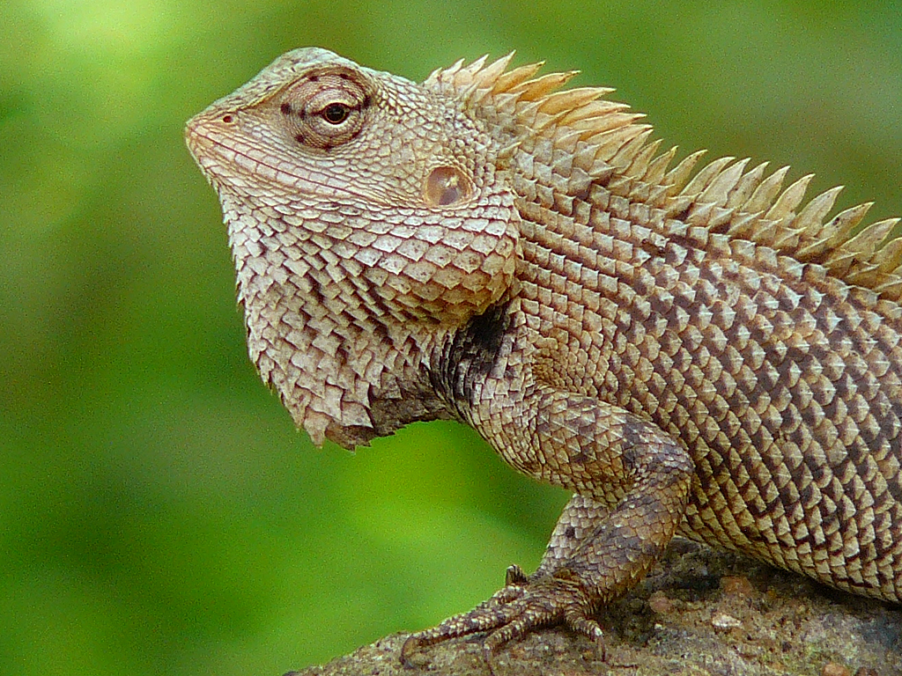

An insectivore is a carnivorous plant or animal that eats insects. An alternative term is entomophage, which also refers to the human practice of eating insects. The first vertebrate insectivores were amphibians.
 Insectivorous animals include nearly all amphibians, numerous bird, fish, and rodent species as well as anteaters, armadillos, pangolins, the aardvark, and many insects themselves. Nearly every taxa of animals, though, consumes insects as some part of their diet.
Insectivores live primarily on land, typically at ground level or beneath it. ... Insectivores can survive in a wide range of habitats from tropical rainforests to temperate marshes, from thick forests to open fields, and from sea-level deserts to mountainsides up to 14,760 feet (4,500 meters).